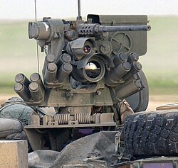

دا یو پرمختللی سیستم دی چې د مصنوعي ذکاوت (AI) مرسته کاروي ترڅو هدفونه په چټک ډول وپېژني او تعقیب کړي. توانایي: د چټک تحلیل او دقیق تعقیب وړتیا لري. ځانګړنې: هوښیار هدف پېژندنه اتومات تعقیب د معلوماتو چټک پروسس د انساني کنټرول ملاتړ